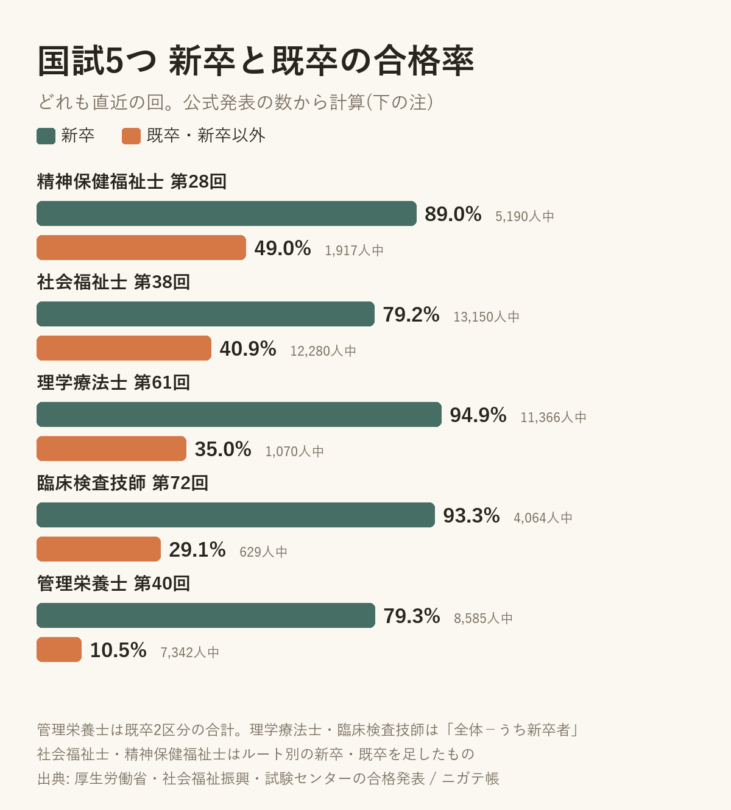

国試5つで、既卒の合格率を並べてみた。新卒との差がいちばん大きいのは管理栄養士だった
2026-10-08 ・ @apkderete
過去問アプリを作っている5つの国家試験で、新卒と既卒の合格率を並べてみました。どれも直近の回で、数は厚生労働省と社会福祉振興・試験センターの合格発表から取っています。
全体の合格率だけを見ると、理学療法士は89.7%、臨床検査技師は84.7%と高い試験です。けれど、新卒と分けてみると、既卒の人の数字はかなり違って見えます。
5つの試験の新卒と既卒

| 試験 | 新卒 | 既卒 |
|---|---|---|
| 精神保健福祉士 第28回 | 89.0% | 49.0% |
| 社会福祉士 第38回 | 79.2% | 40.9% |
| 理学療法士 第61回 | 94.9% | 35.0% |
| 臨床検査技師 第72回 | 93.3% | 29.1% |
| 管理栄養士 第40回 | 79.3% | 10.5% |
表の既卒は、理学療法士と臨床検査技師では新卒以外の人の数です(下の数え方を参照)。人数は図に入れました。既卒は10.5%から49.0%、新卒は79.2%から94.9%でした。5つとも、既卒は新卒より38〜69ポイント低くなっています。
差がいちばん大きいのは管理栄養士
管理栄養士は、新卒が79.3%なのに対して、既卒は10.5%でした。既卒の受験者は7,342人で、受験者全体の46%を占めます。人数が多く、合格率が低いのが管理栄養士の既卒です。
社会福祉士は、既卒が12,280人で、新卒とほぼ同じ人数でした。理学療法士と臨床検査技師は、既卒の受験者が千人前後かそれ以下と少ない試験です。
数え方について
試験によって発表の形が違うので、計算のしかたも違います。
理学療法士と臨床検査技師は、厚生労働省の発表の「全体」から「うち新卒者」を引きました。既卒という区分が発表に無いので、ここでは「新卒以外」と呼んでいます。
社会福祉士と精神保健福祉士は、試験センターの発表に、資格を取るルートごとの新卒・既卒が載っています。それを足しました。足すと発表の全体の数と一致します。
管理栄養士は、厚生労働省の発表の「管理栄養士養成課程(既卒)」と「栄養士養成課程(既卒)」を足しました。新卒は「管理栄養士養成課程(新卒)」の数です。
数字は公式発表から私が計算したもので、計算に誤りがある可能性はあります。気づいたことがあれば X(@apkderete)で教えてください。
試験ごとに、数字の出典と、もう一度受ける人向けの過去問の進め方をまとめています。
精神保健福祉士 / 社会福祉士の既卒 / 理学療法士の新卒以外 / 臨床検査技師の新卒以外 / 管理栄養士の既卒
過去問アプリ「ニガテ帳」(iPhone)は、間違えた問題だけが残り、2回続けて正解すると消える作りです。介護福祉士・管理栄養士・社会福祉士・理学療法士・精神保健福祉士は、直近1回分を無料で解けます。臨床検査技師は別のアプリ「ニガテ帳 臨床検査技師」です。